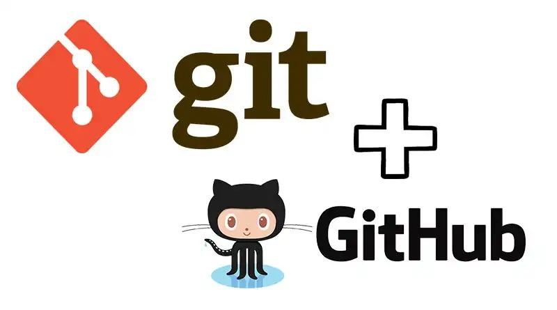

É de extrema importância que um desenvolvedor esteja atento a todas os mecanimos que são utilizados dentro de sua área de atuação. Ter conhecimento sobre alguns sistemas e plataformas populares é de extrema importância para que o programador esteja atualizado neste ramo, o que proporciona maior aproveitamento do seu trabalho e ainda permite que consiga se adaptar bem a qualquer empresa que exija tais conhecimentos. Pensando nisso, criamos um tutorial básico sobre o VCS Git, e a popular plataforma GitHub, a fim de ajudar desenvolvedores iniciantes a se introduzir nesse meio.
O Git é um sistema de controle de versão distribuído que permite rastrear as alterações feitas em arquivos ao longo do tempo. Isso facilita a colaboração em projetos e ajuda a manter um histórico preciso das mudanças. O Git desempenha um papel fundamental na colaboração e no desenvolvimento de software, permitindo que várias pessoas trabalhem juntas em projetos enquanto mantêm um registro claro das modificações feitas. Neste site, ensinaremos algumas funcionalidades básicas desta plataforma extremamente importante e popular entre os programadores.
Em primeiro momento, você deve configurar o seu Git. Para isso, você acessar o site oficial e instalar o Git, em seguida, no terminal, você irá adicionar seu nome e email a partir dos comandos:
init é utilizado para iniciar um repositório Git dentro so sistema. Após a incialização, a ferramenta passa a monitorar o estado dos arquivvos no projeto.
O comando clone cria uma cópia de um repositório remoto em um diretório da máquina.A partir de um repositório clonado, é possível acompanhar o de um projeto e suas modificações, além de contribuir com o projeto, a partir do envio das suas modificações ao repositório central.
branch serve para criar novos ramos de desenvolvimento, bem como visualizar quais são os ramos existentes.Para criar um novo ramo, basta utilizar o comando git branch seguido do nome do novo ramo, e para visualizar quais os ramos existentes a utilização do comando é bem similar: basta não informar um nome para a nova branch, e serão listadas todas as já criadas
O comando checkout é utilizado para navegar entre as versões do projeto, bem como entre as diferentes ramificações criadas. Para navegar entre as versões, basta usar o comando: git checkout = Hashcode do commit. E todo o estado do projeto se modificará ao estado no qual o commit foi feito
É utilizado para verificar o status de um repositório git, bem como o estado do repositório central. O comando mostra informações como se o projeto local está sincronizado com o central, quais arquivos estão sendo monitorados pelo Git e em qual branch você está no projeto.
Diff é utilizado para visualizar modificações feitas entre commits, sejam eles entre um commit arbitrário e o estado atual do projeto, dois commits arbitrários, ou até mesmo todas alterações entre dois commits distintos. Para visualizar as alterações entre um commit distinto e o atual, basta usar o comando: git diff = Hashcode do commit anterior
É comando add utilizado para adicionar arquivos ao pacote de alterações a serem feitas. É possível adicionar um único arquivo, múltiplos arquivos de uma vez, ou até mesmo um diretório, a partir de seu caminho. Uma vez que um arquivo é adicionado ao pacote de alterações com o comando add, ele está pronto para entrar no próximo commit.
É utilizado para criar uma nova versão do projeto a partir de um pacote de alterações. O commit pega o pacote de modificações adicionado através do comando git add, fecha essas alterações em um pacote e o identifica através de um Hashcode
O comando push permite que você envie os commits de sua branch repositório Git local para o seu repositório remoto. Para poder fazer um git push para seu repositório remoto, você deve garantir que todas as suas alterações no repositório local sejam confirmadas.
O comando pull é usado para buscar e baixar conteúdo de repositórios remotos e fazer a atualização imediata ao repositório local para que os conteúdos sejam iguais.
O comando revert é usado para desfazer alterações ao histórico de commits do repositório, no entanto, em vez de remover o commit do histórico do projeto, ele descobre como inverter as alterações introduzidas pelo commit e anexa um commit novo com o conteúdo resultante.
Merge, que significa mesclagem, é o jeito do Git de unificar um histórico bifurcado. O comando git merge permite que você pegue as linhas de desenvolvimento independentes criadas pelo git branch e as integre em uma ramificação única.
stash arquiva de alterações que você fez na cópia de trabalho durante um determinado período, para que você possa trabalhar em outra coisa, depois voltar e fazer a reaplicação mais tarde.
comando rm é usado para remover arquivos individuais ou uma coleção de arquvios de um repositório do Git. Ele pode ser considerado como o inverso do comando git add.
O comando config é utilizado no sistema de controle de versão Git para configurar opções específicas do usuário, repositório ou sistema. Esta opção é usada para definir a configuração em nível global, ou seja, as configurações serão aplicadas a todos os repositórios do usuário no sistema.
O comando reset é uma ferramenta complexa e versátil para desfazer alterações. Ele tem três formas principais de invocação. Estas formas correspondem aos argumentos --soft, --mixed, --hard da linha de comandos.
O comando remote é, em essência, uma interface para gerenciar uma lista de entradas remotas que são armazenadas no arquivo ./. git/config do repositório.
O comando fetch no Git é usado para buscar as alterações mais recentes de um repositório remoto para o repositório local. Ele não faz nenhuma alteração no branch atual do repositório local, mas atualiza as referências remotas, como as branches remotas e as tags.
O show é um utilitário de linha de comando usado para exibir informações expandidas de objetos Git, como blobs, trees, marcações e commits. O git-show tem um comportamento específico por tipo do objeto.
O help é um comando do terminal que traz diversas informações sobre os comandos do git. Ele mostra, desde os comandos em si, quanto também para que serve cada um. Se você digitar git help e o comando que quer ver descrito ele lista para que serve aquele comando.
A partir da perspectiva de conteúdo, o rebaseé o processo de alterar a base da ramificação do commit para outra, fazendo parecer como se você criou a ramificação a partir de um commit diferente. De um jeito intrínseco, o Git realiza isso criando novos commits e aplicando-os à base especificada.
A função blame de alto nível é a exibição de metadados do autor anexados a linhas confirmadas específicas em um arquivo. É usado para explorar o histórico de código específico e responder dúvidas sobre o que, como e por que o código foi adicionado ao repositório.
git tag é em geral usado para capturar um ponto no histórico que é usado para uma versão marcada.Um marcador é como uma ramificação que não muda. Diferente das ramificações, os marcadores depois de criados não têm mais histórico de commits
| Comando | Descrição |
|---|---|
| git init | Inicializa um novo repositório Git. |
| git clone | Clona um repositório existente. |
| git branch | Lista, cria ou deleta branches. |
| git checkout | Muda para outro branch ou revisa arquivos. |
| git status | Verifica o status das alterações no repositório. |
| git diff | Mostra as diferenças entre commits, branches, etc. |
| git add | Adiciona arquivos ao índice (staging area). |
| git commit | Salva as mudanças no repositório local. |
| git push | Envia as mudanças para um repositório remoto. |
| git pull | Atualiza o repositório local com mudanças do repositório remoto. |
| git revert | Reverte um commit específico. |
| git merge | Mescla branches. |
| git stash | Salva alterações temporariamente sem commitar. |
| git rm | Remove arquivos do índice e do diretório de trabalho. |
| git config | Configurações do Git (usuário, email, etc.). |
| git reset | Reseta o índice e a árvore de trabalho para um estado anterior. |
| git remote | Gerencia repositórios remotos. |
| git fetch | Baixa objetos e referências de um repositório remoto. |
| git show | Mostra várias informações sobre objetos Git. |
| git help | Mostra ajuda sobre comandos Git. |
| git rebase | Reaplica commits em cima de outro branch. |
| git blame | Mostra quem alterou cada linha de um arquivo. |
| git tag | Cria, lista, deleta ou verifica uma tag. |
GitHub é uma plataforma de hospedagem de repositórios de código-fonte e arquivos, com controle de versão que tem o sistema Git como base. Ele permite que os desenvolvedores ccontribuam em projetos compartilhados, privados ou de código-aberto de qualquer lugar do mundo, e ainda mantenham um registro de seu progresso. Mostraremos a seguir os passos para configurar e acessar o GitHub: